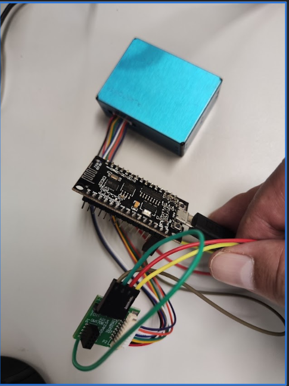
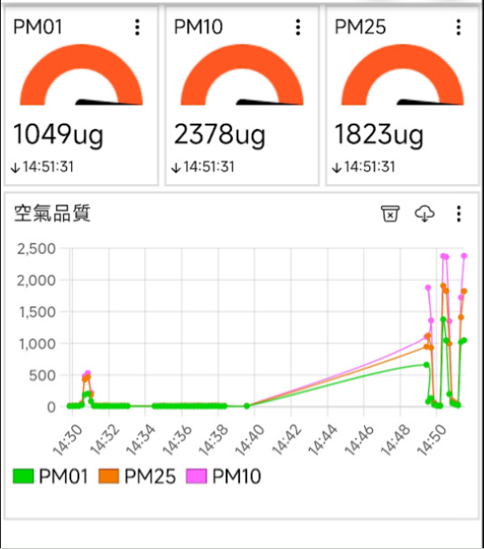
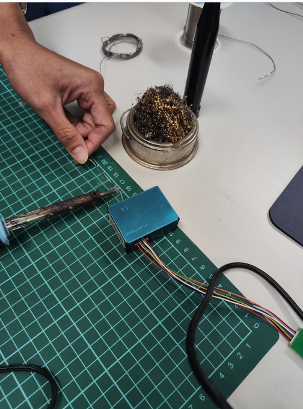
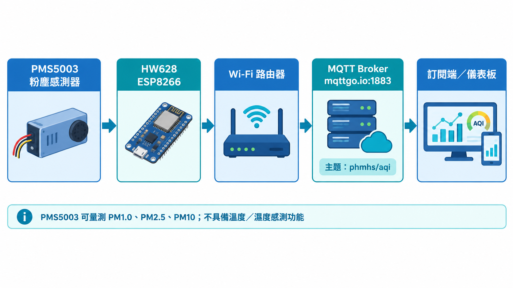
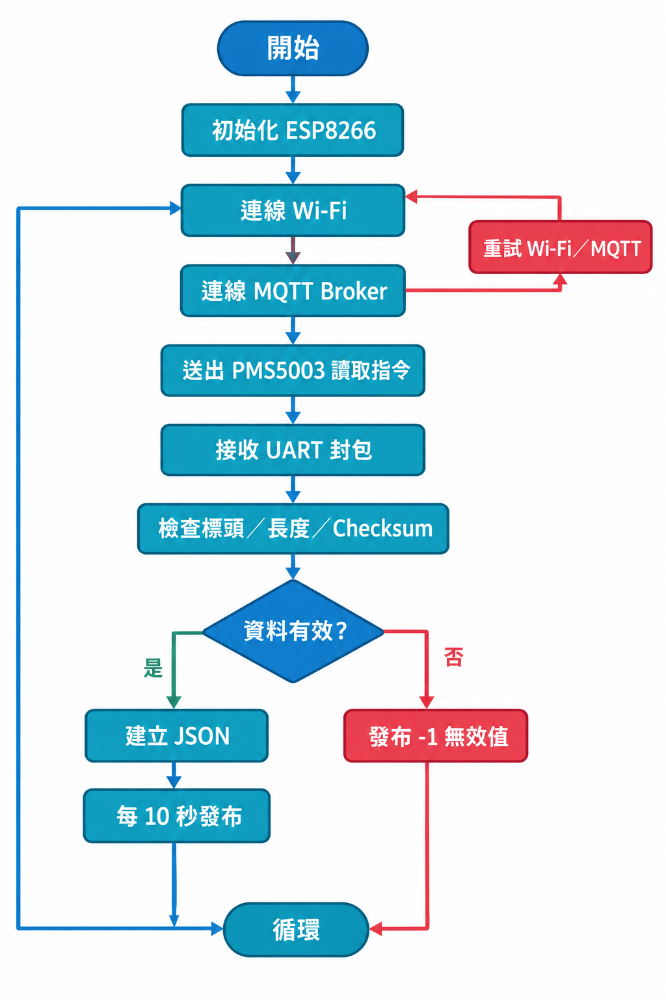

專案摘要
本專案完成從感測器接線、ESP8266 韌體開發、Wi‑Fi 連線到 MQTT 發布的完整流程。PMS5003 使用被動模式讀取 32 位元組封包，並以 JSON 格式傳送測量值。
PM1.0
細懸浮微粒
讀取並發布 PM1.0 濃度。
PM2.5
主要監測指標
適合用於空氣品質觀察。
PM10
可吸入懸浮微粒
與其他粒徑資料一併傳送。
成果照片





硬體與通訊設定
| 主控板 | HW628 / ESP8266（NodeMCU 1.0） |
|---|---|
| 感測器 | Plantower PMS5003 |
| UART | PMS5003 TXD → D6 / GPIO12；RXD → D5 / GPIO14 |
| MQTT Broker | mqttgo.io:1883 |
| 資料主題 | phmhs/aqi |
| 資料格式 | {"pm01":10,"pm25":15,"pm10":15} |
學習與除錯成果
本次實作依序完成 LED 燒錄測試、Wi‑Fi 連線、MQTT 模擬資料發布，以及 PMS5003 實際封包解析。最後確認可穩定發布 PM1.0、PM2.5、PM10；PMS5003 不具備溫度與濕度功能，因此相關欄位以 -1 表示不適用。